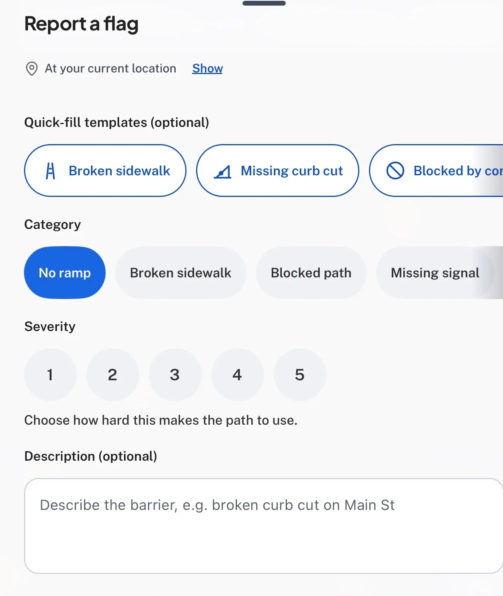
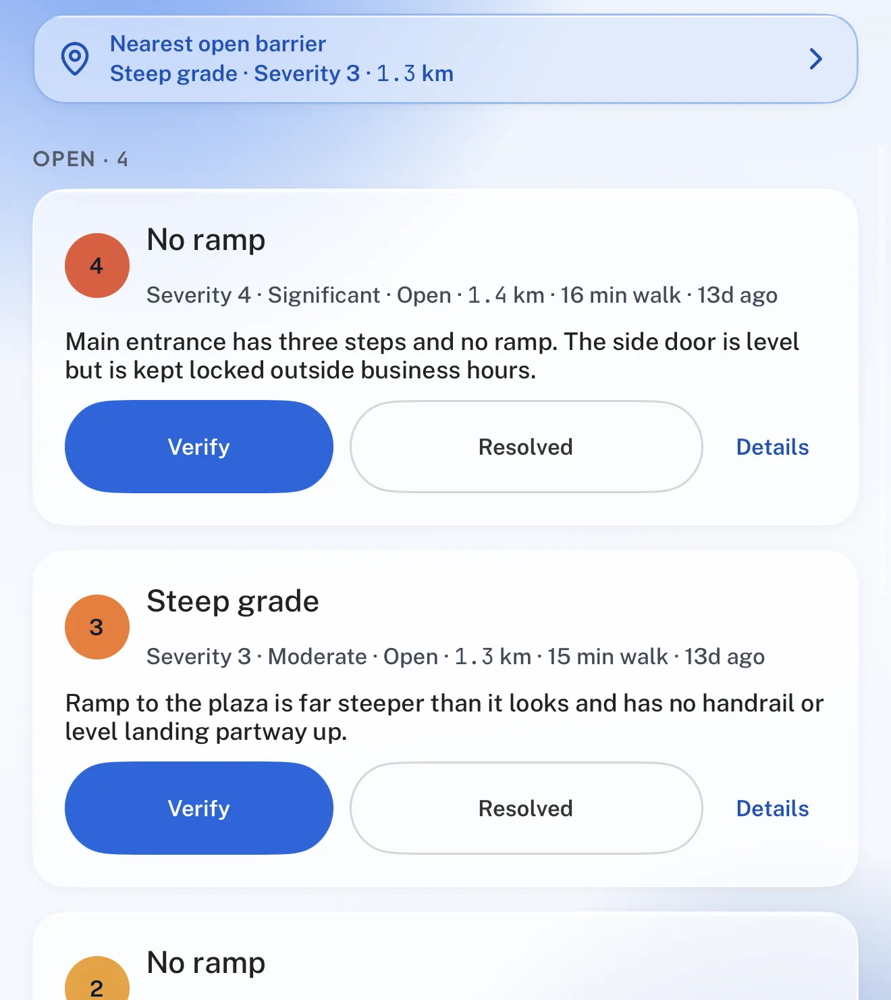

What you are looking at. Three matched treatments of the Flagstone "Inside the build" proofs, built in the site's own tokens with the real captures. The baseline is a reconstruction of the shipped grid; A and B are the D-CON-003 A three-window row with the first window carrying the approved VE04 edge (A) or a quieter rest line (B). Variant C (retire) is discussed in the packet and is not built.
The beat here is a prototype. It plays only the settle transition (420 ms desktop / 280 ms phone, --ease-out, border colour only). It does not reproduce the production lifecycle and must not be read as evidence about it. Reduced motion and no-JS rest on the settled edge, as in production.
Baseline · reconstruction
Shipped treatment, rebuilt from CaseProof (app/work/[slug]/page.tsx) and globals.css: a two-column 48 px grid inside the 652 px article column, 7:8 plates with a 1 px line and 16 px radius, the first plate on the dark-mono exhibit mat with the VE04 edge (accent / 0.70 light · / 0.40 dark). Not a render of the live site.
VE04 edge state: —
Inside the build
See it in motion.
-
From map pin to report form, the current reporting flow in motion. -

Reporting a barrier: quick-fill templates, category, severity, and description. -

Community review: neighbours verify barriers and mark resolved reports.
Variant A · keep VE04
The three-window thin-frame row. Window 01 keeps the approved VE04 edge exactly (settled rest accent / 0.70 light · / 0.40 dark; one arrival beat, border colour only). Windows 02 and 03 stay on the neutral 1 px line. The warmer, stronger first border is the row's only hierarchy cue.
VE04 edge state: —
Inside the build
See it in motion.
-
01 — Reporting flow, in motion.
From map pin to report form, the current reporting flow in motion.
-
02 — Report a barrier.
Reporting a barrier: quick-fill templates, category, severity, and description.
-
03 — Community review.
Community review: neighbours verify barriers and mark resolved reports.
- Current Flagstone build · captures added 2026-09-07 (a531953) · captions as published
Variant B · fold into frame grammar
The same row. Window 01 keeps the one-time beat but settles to a quieter line inside the thin-frame language: accent / 0.42 light · / 0.30 dark. Same 1 px weight, same radius, same focus ring. The question B asks is whether the first proof still reads as the arrival, and whether the beat remains perceptible when its destination is this close to the neutral line.
VE04 edge state: —
Inside the build
See it in motion.
-
01 — Reporting flow, in motion.
From map pin to report form, the current reporting flow in motion.
-
02 — Report a barrier.
Reporting a barrier: quick-fill templates, category, severity, and description.
-
03 — Community review.
Community review: neighbours verify barriers and mark resolved reports.
- Current Flagstone build · captures added 2026-09-07 (a531953) · captions as published
Specimen · the lines at true size, on the case-body surface
Same colours the rows use; no magnification. Magnified corner crops and measured values are in captures/.
What this prototype does not reproduce
- The VE04 lifecycle: session consumption at trigger, hash / Back-Forward / reload / restored-scroll settling, the dead-JS failsafe floor, theme-change retargeting. Only the settle transition is played, once per page load per section, with a prototype-only replay.
- The live page's composited world backdrop. Stages sit on the
canvas-alttoken, an approximation ofworld-surface-alt. - The Reveal entrance (fade and 16 px rise) that windows 02 and 03 have in production. Rows render settled so the only moving variable is the first window's edge.
- Production autoplay. The shipped clip autoplays muted while intersecting (ThemedMotion, reduced motion excepted). Here the clip is still-first by brief: nothing plays until Play is chosen.
- LQIP placeholders behind the stills, lazy loading, and the sticky user-pause memory.
Status
- DESIGN_STUDY_COMPLETE for the visual comparison in this folder.
- MOTION_VERIFICATION_PENDING for the production lifecycle (engineering verification, not this study).
- ACCESSIBILITY_REVIEW_PENDING for assistive-technology runs; measured values in this folder are instrument readings, not conformance claims.